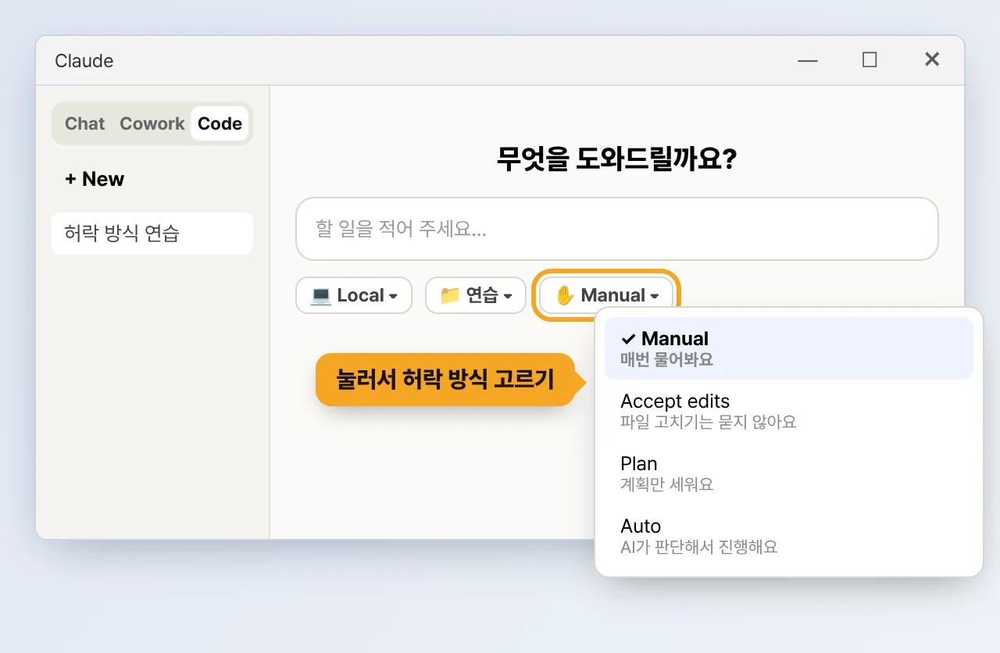
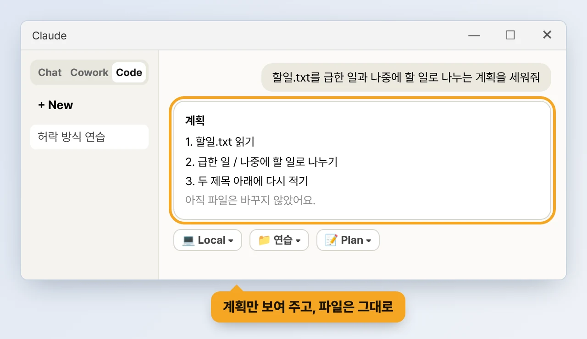
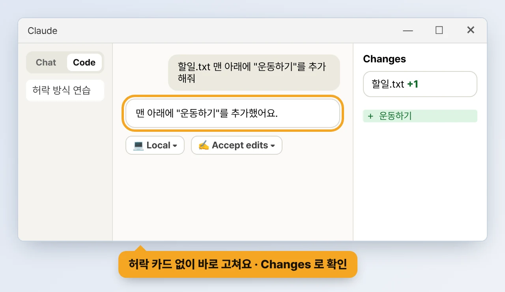
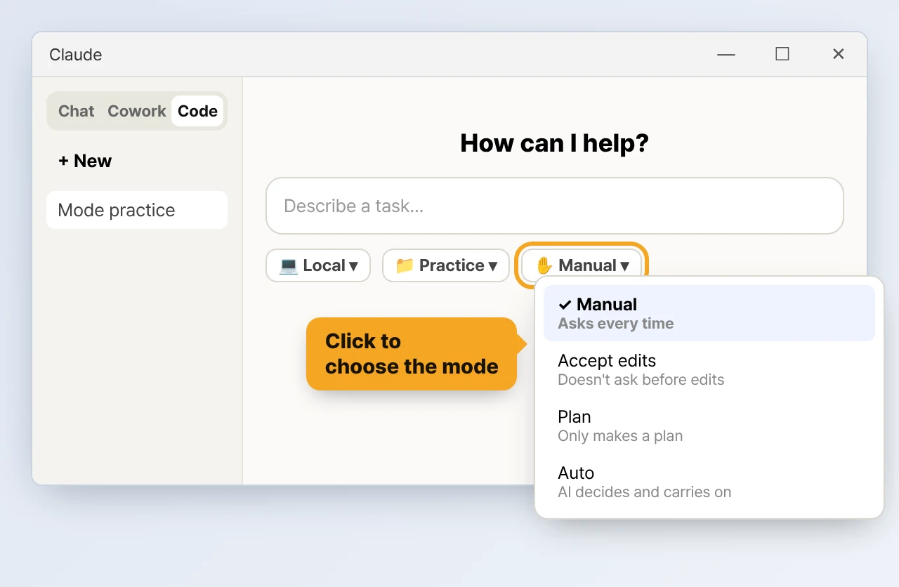
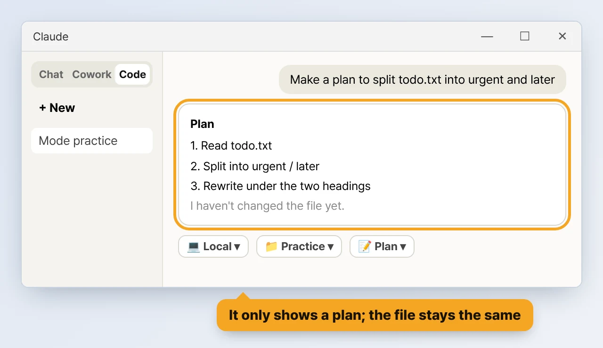
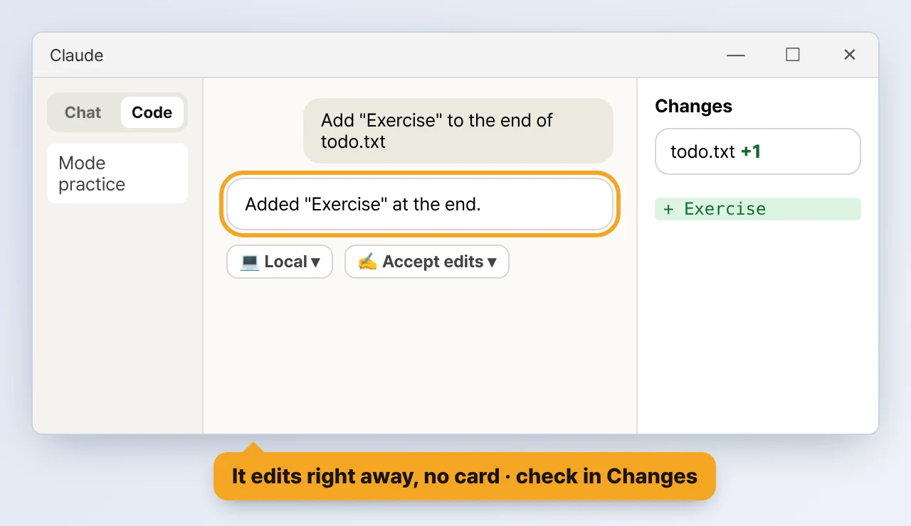

👆 이 내용은 버튼 따라 하는 실습으로도 있어요. 처음이라면 실습으로 직접 해 보고, 이 글은 복습할 때 보세요. 실습 시작하기 →
※ 글 속 그림은 따라 하기 쉽도록 그린 예시입니다. 실제 앱 화면과 모양·글자가 조금 다를 수 있어요.
오늘 새로 배우는 것
지금까지는 Manual 방식으로, Claude가 파일을 만들거나 고칠 때마다 허락을 물었어요. 안전하지만 일이 많으면 번거롭죠. 오늘은 허락 방식(모드)을 바꿔 보고, 언제 바꿔도 안전한지를 배워요.
1. 허락 방식 목록 열기
+ New로 새 대화를 열고(폴더는 연습), 입력 칸 아래 Manual 버튼을 누르면 목록이 나와요.

| 방식 | 하는 일 | 언제 |
|---|---|---|
| Manual | 만들기·고치기·명령 실행 전에 매번 물어요 | 기본. 익숙해질 때까지, 중요한 폴더에서 |
| Plan | 파일을 고치지 않고 계획만 보여 줘요 | 큰 일을 맡기기 전에 |
| Accept edits | 파일 고치기와 폴더 만들기·옮기기 같은 흔한 파일 명령은 묻지 않아요. 다른 명령은 물어요 | 연습 폴더에서 분명하고 반복적인 일 |
| Auto | AI가 부탁과 맞는지 스스로 판단하며 진행해요 | 익숙해진 뒤, 중요하지 않은 일부터 |
앱 버전에 따라 이름이 Ask permissions(=Manual), Auto accept edits(=Accept edits), Plan mode(=Plan)처럼 보일 수 있어요. Auto는 계정이나 모델에 따라 안 보일 수 있어요.
2. Plan — 계획 먼저 세우게 하기
목록에서 Plan을 고르고 보내 보세요.
할일.txt를 급한 일과 나중에 할 일로 나누는 계획을 세워줘
Claude가 파일을 읽기만 하고 계획을 보여 줘요. 마음에 안 들면 Plan 상태에서 "3번은 빼고 다시 계획해줘"처럼 고쳐 달라고 하면 돼요.
3. 계획대로 실행하기
허락 방식을 다시 Manual로 바꾸고 보냅니다. 허락 카드를 읽고 허용.
좋아, 그 계획대로 해줘앱이 계획 아래에 "계획대로 진행" 같은 버튼을 보여 주면 그걸 눌러도 돼요. 그때 허락 방식이 바뀔 수 있으니 입력 칸 아래 버튼을 꼭 확인하세요.
4. Accept edits — 묻지 않고 바로 고치기
허락 방식을 Accept edits로 바꾸고 보내 보세요.
할일.txt 맨 아래에 "운동하기"를 추가해줘
이번에는 허락 카드 없이 바로 고쳐요. 빠르지만 고치기 전에 보여 주지 않으니, 끝나면 오른쪽 Changes로 바뀐 내용을 꼭 훑어보세요. 잘못 바뀌었으면 "방금 한 거 원래대로 되돌려줘".
5. Manual로 되돌려 두기
연습이 끝나면 다시 Manual로 바꿔 두세요. 새 대화가 이전 선택을 따라갈 수 있으니, 새 대화마다 입력 칸 아래 버튼을 확인하는 습관을 들이세요.
조심해서 쓸 방식
Auto는 AI가 스스로 판단하며 진행해요. 편하지만 판단이 틀릴 수도 있어요. 익숙해진 뒤에, 중요하지 않은 일부터 써 보세요.
잘 안 될 때
| 이런 경우 | 이렇게 하세요 |
|---|---|
| Plan인데 고치려고 해요 | 입력 칸 아래 버튼이 Plan인지 확인하세요. 허락 카드가 나오면 거절하세요. |
| Accept edits인데 허락을 물어요 | 파일 고치기가 아닌 다른 명령은 Accept edits에서도 물어요. 정상이에요. |
| 어느 방식인지 헷갈려요 | 입력 칸 아래 버튼 글자를 보세요. 모르겠으면 Manual로 바꾸면 안전해요. |
오늘 배운 것
- 허락 방식은 입력 칸 아래 버튼에서 바꾼다. 새 대화마다 확인한다.
- Manual이 기본, 큰 일 전에는 Plan, 연습 폴더의 반복 작업은 Accept edits.
- 덜 묻는 방식일수록 끝난 뒤 내가 확인해야 한다. Bypass는 쓰지 않는다.
이것으로 기본 조작을 모두 익혔어요. 다음 편부터는 실수 되돌리기, 사진 보여 주기, 그리고 엑셀·문서 같은 실무 활용으로 넘어갑니다.
※ The pictures in this guide are illustrations to make it easy to follow. The real app may look a little different or use different words.
What you'll learn today
So far you've used Manual mode, where Claude asks every time it creates or edits a file. It's safe, but tiring when there's a lot to do. Today you'll change the permission mode and learn when it's safe to change it.
1. Open the list of modes
Open a new chat with + New (folder: Practice) and click the Manual button under the typing box to open the list.

| Mode | What it does | When |
|---|---|---|
| Manual | Asks every time before creating, editing or running commands | Your default. Until you're comfortable, and in important folders |
| Plan | Doesn't edit files; only shows a plan | Before handing over a big job |
| Accept edits | Doesn't ask for file edits and common file commands like making folders or moving files. Still asks for other commands | Clear, repetitive jobs in the Practice folder |
| Auto | The AI judges for itself whether actions match your request | Once you're comfortable, starting with unimportant jobs |
Depending on the app version, names may read Ask permissions (= Manual), Auto accept edits (= Accept edits) or Plan mode (= Plan). Auto may not appear depending on your account or model.
2. Plan — have it make a plan first
Choose Plan from the list and send this.
Make a plan to split todo.txt into urgent and later
Claude only reads the file and shows a plan. Don't like it? While in Plan, ask for changes, e.g. "Leave out step 3 and plan again."
3. Carry out the plan
Switch the mode back to Manual and send this. Read the permission card and click Allow.
Great, go ahead with that planIf the app shows a button under the plan like "Proceed with the plan", you can click that instead. It may change the mode, so check the button under the typing box.
4. Accept edits — edit without asking
Switch the mode to Accept edits and send this.
Add "Exercise" to the end of todo.txt
This time it edits without a permission card. It's fast, but it doesn't show you changes first, so always skim Changes on the right when it's done. If something went wrong: "Undo what you just did."
5. Switch back to Manual
When you're done practising, switch back to Manual. A new chat may keep your last choice, so make a habit of checking the button under the typing box in every new chat.
Modes to use with care
Auto lets the AI judge for itself as it goes. Convenient, but it can judge wrong. Try it once you're comfortable, starting with unimportant jobs.
If something goes wrong
| If this happens | Do this |
|---|---|
| It tries to edit in Plan | Check the button under the typing box says Plan. If a permission card appears, click Deny. |
| It still asks in Accept edits | Commands other than file edits still ask in Accept edits. That's normal. |
| I'm not sure which mode I'm in | Read the button under the typing box. When in doubt, switching to Manual is safe. |
What you learned today
- Change the mode with the button under the typing box, and check it in every new chat.
- Manual is the default, Plan before big jobs, Accept edits for repetitive work in the Practice folder.
- The less a mode asks, the more you need to check afterwards. Don't use Bypass.
That covers all the basic controls. Next come undoing mistakes, showing it pictures, and real work like spreadsheets and documents.